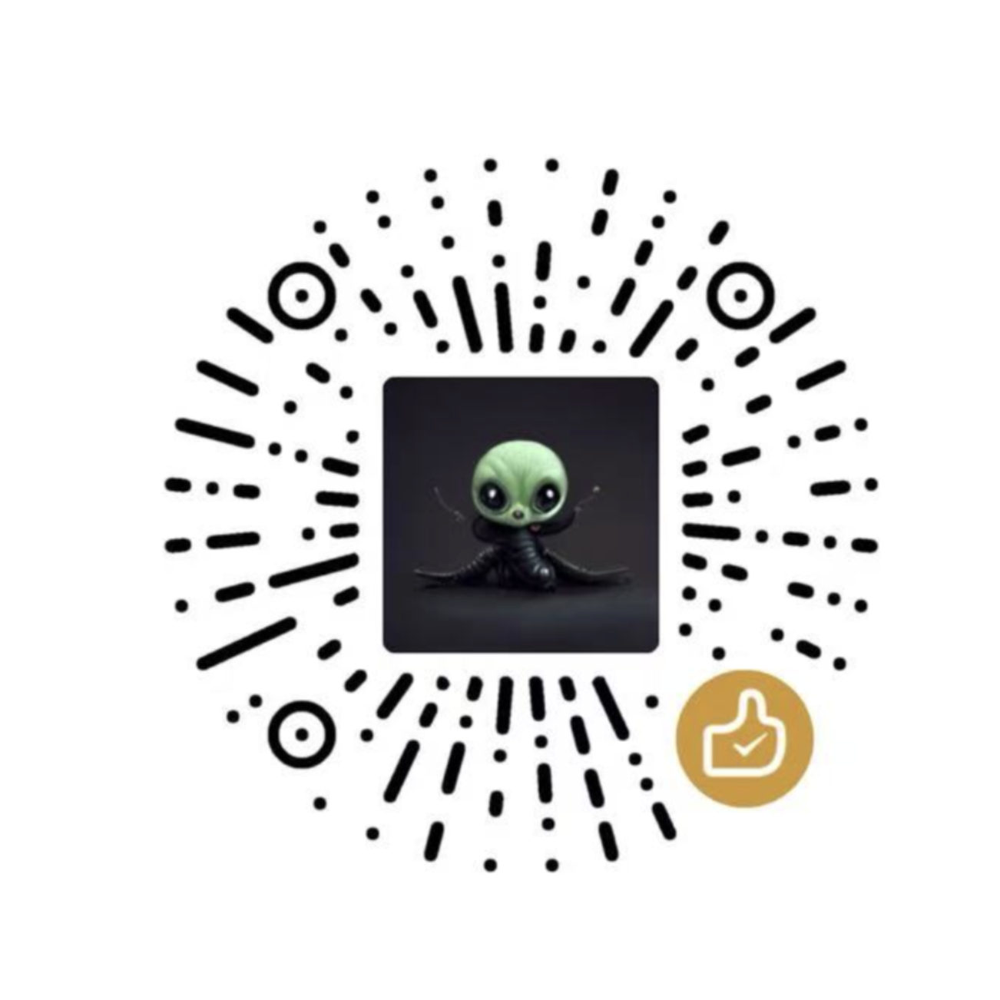

精选、工程、研究、创业、新闻、商业
一起学习 Youtube AI 播客
这里整理的是长期有价值的 AI 播客和 YouTube 视频播客：适合通勤听、做选题、补技术脉络，也适合判断创业和产品方向。
- 收录
- -- 个
- 更新
- --
- 入口
- YouTube 优先
正在加载索引...
没有匹配的播客
换一个关键词，或者先回到全部索引。
精选、工程、研究、创业、新闻、商业
这里整理的是长期有价值的 AI 播客和 YouTube 视频播客：适合通勤听、做选题、补技术脉络，也适合判断创业和产品方向。
正在加载索引...
换一个关键词，或者先回到全部索引。
如果这个索引帮你省下了筛选时间，可以请乔木喝杯咖啡。

公众号「向阳乔木推荐看」持续分享 AI 工具、产品判断和实战工作流。